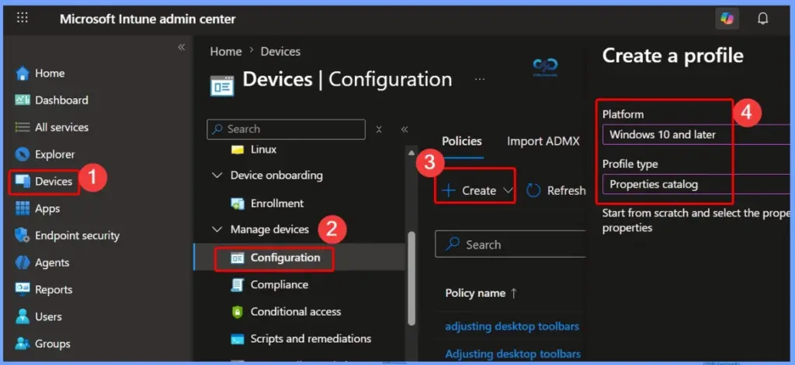
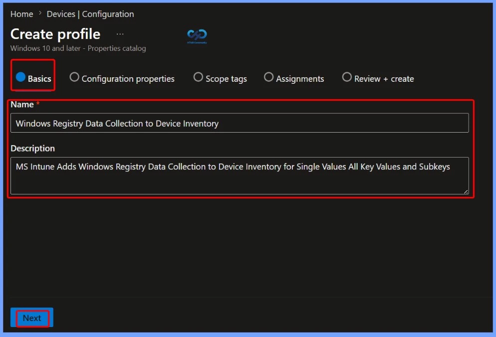
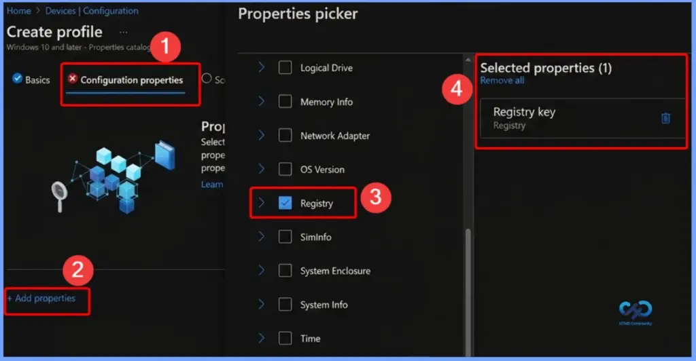
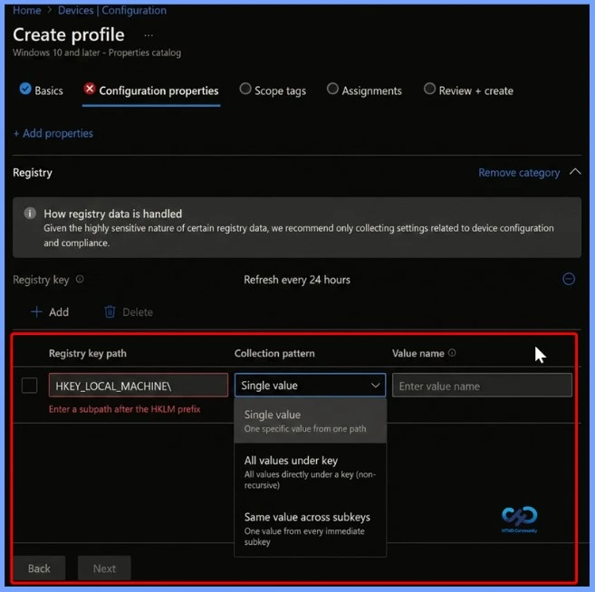

Key Takeaways
- Windows Registry Data in Device Inventory
- No More Custom Scripts
- Three Registry Collection Methods Single Value, All Values Under a Key (Non-Recursive), Same Value Across Subkeys
- Detailed Registry Information Registry Key Path, Value Name, Value Type, Value Data
- Improved Troubleshooting and Compliance
Microsoft Intune 2607 introduces Windows Registry Data collection in Device Inventory, allowing IT admins to verify actual device configurations without relying on custom discovery or remediation scripts. Using the Properties Catalog, admins can collect registry information through Single Value, All Values Under a Key (Non-Recursive), or Same Value Across Subkeys.
Table of Content
MS Intune Adds Windows Registry Data Collection to Device Inventory for Single Values All Key Values and Subkeys
Intune reports the registry key path, value name, value type, and value data, making it easier to troubleshoot issues, validate compliance, and monitor the security posture of managed Windows devices. Registry data collection is now built into the Properties Catalog, eliminating the need to create, test, and maintain custom discovery or remediation scripts.
- Sign in to the Microsoft Intune admin center.
- Go to Devices > Configuration.
- Click + Create and select New policy.
- In the Create a profile pane:
- Platform: Windows 10 and later
- Profile type: Properties catalog

Enter the Policy Name and Description
On the Basics page, provide a meaningful Name and an optional Description for the policy. Use a descriptive name, such as Windows Registry Data Collection to Device Inventory, to clearly identify its purpose. Adding a brief description helps administrators understand that the policy collects Windows registry data, including single values, all key values, and subkeys, for reporting in Intune Device Inventory. Click Next to continue.

Select the Registry Property for Device Inventory
On the Configuration properties page, click Add properties to open the Properties picker. From the available categories, select Registry and choose the Registry key property. After the property appears under Selected properties, click Select to add it to the policy, then continue with the remaining configuration.

Configure Registry Data Collection in the Properties Catalog
Use the Properties catalog to configure Windows registry data collection in Microsoft Intune. For each registry entry, specify the Registry key path and, if required, the Value name. After the policy is deployed, the Intune device agent collects the registry information from targeted devices and reports the Registry key path, Value name, Value type, and Value data to Device Inventory for inventory and reporting purposes.
| Registry Collection Option | Details | Example |
|---|---|---|
| Single Value | Specify a registry key path and value name to collect a single registry value from the specified path. | Collect UEFICA2023Status from HKLM\SYSTEM\CurrentControlSet\Control\SecureBoot. |
| All Values Under a Path (Non-Recursive) | Specify a registry key path to collect all values located directly under that key. This method does not include values from subkeys. | Collect all values under a Windows Update registry path. |
| Same Value Across Subkeys | Specify a base registry key path and a value name to collect the same value from each immediate subkey. | Collect the DHCP status value from each subkey under HKLM\SYSTEM\CurrentControlSet\Services\Tcpip\Parameters\Interfaces. |

View Registry Data in Device Inventory
After the registry data is collected, it is available in Device Inventory in the Microsoft Intune admin center. Administrators can view registry information alongside other device inventory details to verify device configurations, check the current device state, and troubleshoot issues. This eliminates the need to create and run custom scripts to collect registry data, making device management simpler and more efficient.
Registry Data Collection Results and Limits
Windows Registry Data Collection in Microsoft Intune provides an easy way to collect and view registry information from managed Windows devices without using custom scripts. By configuring the Properties catalog, administrators can verify device settings, troubleshoot issues, and monitor registry-based configurations directly from Device Inventory.
- If a registry value exists but has no data, Intune reports it as Empty.
- If the registry key or value doesn’t exist, the result shows Not found.
- Missing values on one device don’t affect data collection on other devices.
- Each registry value can be up to 6 KB in size.
- Each device can collect up to 100 registry keys.
- Data beyond these limits isn’t collected.
- Intune doesn’t collect sensitive information, such as passwords, credentials, certificates, private keys, or authentication tokens.
- Registry data collection supports only the HKEY_LOCAL_MACHINE (HKLM) registry hive.
- Registry inventory is intended for device configuration and troubleshooting
Resources
Need Further Assistance or Have Technical Questions?
Join the LinkedIn Page and Telegram group to get the latest step-by-step guides and news updates. Join our Meetup Page to participate in User group meetings. Also, join the WhatsApp Community and the Whatsapp channel to get the latest news on Microsoft Technologies. We are there on Reddit as well.
Author
Anoop C Nair is a Workplace Technology solution architect with 25+ years of experience. Microsoft Certified Trainer. Microsoft MVP from 2015 onwards for consecutive 11+ years! He is a blogger, Speaker, and Founder of HTMD Community and HTMD Conference. His main focus is on Device Management technologies like Intune, Windows, and Cloud PC. He writes about technologies like Intune, SCCM, Windows, Cloud PC, Entra, and Microsoft Security.